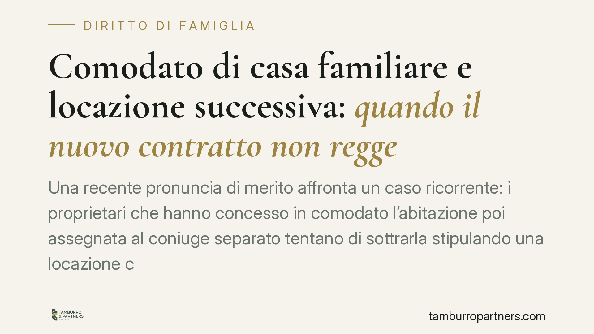

Comodato di casa familiare e locazione successiva: quando il nuovo contratto non regge
Una recente pronuncia di merito affronta un caso ricorrente: i proprietari che hanno concesso in comodato l'abitazione poi assegnata al coniuge separato tentano di sottrarla stipulando una locazione con un terzo. Il giudice nega effetti a quel contratto, ma conferma l'obbligo dell'assegnatario di sostenere le spese condominiali ordinarie. Un chiarimento utile su diritti reali, godimento e oneri di gestione.

Il caso
La vicenda è frequente nelle crisi familiari. I genitori di uno dei coniugi concedono in comodato (prestito d'uso gratuito) un immobile, che diventa casa familiare. Sopravvenuta la separazione, il giudice assegna l'abitazione al coniuge affidatario dei figli. A quel punto i proprietari — insoddisfatti dell'assegnazione — stipulano con un terzo un contratto di locazione sullo stesso immobile, nel tentativo di riacquisirne la disponibilità.
Il Tribunale ha negato efficacia a tale locazione nei confronti dell'assegnataria, confermando però a carico di quest'ultima l'obbligo di pagare le spese condominiali ordinarie maturate dopo l'assegnazione.
Una precisazione doverosa: gli estremi esatti della pronuncia (numero e anno) sono in corso di verifica. Trattiamo quindi il principio, non il singolo dispositivo.
Inquadramento normativo
Il comodato è disciplinato dagli artt. 1803 e seguenti del codice civile: è il contratto con cui una parte consegna un bene affinché l'altra se ne serva, gratuitamente, con obbligo di restituzione.
Il cuore della materia è l'art. 1809 c.c. Quando il comodato è concesso per un uso determinato — e l'uso quale casa familiare lo è — il comodante deve attendere che l'uso cessi. Può chiedere la restituzione anticipata solo in presenza di un «bisogno urgente e imprevisto».
Su questo impianto si sono pronunciate le Sezioni Unite della Cassazione. Con la sentenza n. 13603/2004 è stato affermato che il comodato di casa familiare per uso determinato vincola il comodante alla destinazione impressa al bene, anche dopo la crisi coniugale. La successiva n. 20448/2014 ha precisato i limiti del recesso: il «bisogno urgente e imprevisto» va inteso in senso rigoroso e non può coincidere con un sopravvenuto ripensamento o con la mera volontà di riprendere il bene.
È questo lo sfondo obbligato: chi ha concesso la casa in comodato per uso familiare non può liberarsene a piacimento.
La questione tecnica: nullità o inopponibilità?
Il provvedimento qualifica la locazione come nulla. Riteniamo opportuno segnalare che la ricostruzione merita cautela.
La nullità per impossibilità dell'oggetto (art. 1346 c.c.) è dubbia: un immobile occupato da un assegnatario non ha oggetto «impossibile», e la locazione produce comunque effetti obbligatori tra le parti che la sottoscrivono.
La nullità per motivo illecito (art. 1345 c.c.) richiede che il motivo sia illecito, determinante e comune a entrambe le parti. Occorre quindi dimostrare che anche il conduttore terzo fosse consapevole e partecipe dell'intento di scavalcare l'assegnazione: se il terzo è in buona fede, questa strada si chiude.
La chiave più solida è un'altra: l'inopponibilità. Il godimento dell'assegnatario, tutelato dal provvedimento giudiziale e dal vincolo del comodato ex art. 1809 c.c., prevale su un titolo di locazione sorto dopo. La locazione potrà anche essere valida tra proprietario e conduttore, ma non è idonea a rimuovere il godimento già tutelato. In breve: il contratto non «cade», semplicemente non raggiunge lo scopo di estromettere l'assegnatario.
La distinzione non è teorica: incide sulle domande da proporre in giudizio e sulle difese disponibili.
Le spese condominiali
Il secondo punto conferma un principio di equilibrio. L'assegnatario che gode effettivamente dell'immobile sostiene gli oneri legati al godimento — le spese condominiali ordinarie — mentre le spese straordinarie restano in capo al proprietario.
Il criterio richiama, per analogia, la logica dell'art. 1576 c.c. in tema di piccola manutenzione a carico di chi detiene il bene. Chi vive nell'immobile paga ciò che attiene all'uso corrente; chi ne ha la proprietà risponde degli interventi strutturali e straordinari.
Implicazioni pratiche
Per i proprietari: concedere la casa in comodato per uso familiare comporta un vincolo serio, difficilmente aggirabile con operazioni successive. Tentare di superarlo con una locazione di comodo espone a contenzioso e a costi.
Per l'assegnatario: il provvedimento di assegnazione, unito al titolo di comodato, offre una posizione di godimento resistente, ma non gratuita sotto il profilo degli oneri ordinari di gestione.
Per il terzo conduttore: firmare una locazione su un immobile già occupato significa esporsi al rischio concreto di non ottenere mai la disponibilità del bene.
Cosa fare in concreto
- Verificate il titolo di provenienza prima di stipulare qualsiasi contratto su un immobile: accertate l'esistenza di un comodato per uso familiare e di eventuali provvedimenti di assegnazione.
- Documentate il bisogno se siete comodanti e intendete chiedere la restituzione: l'art. 1809 c.c. richiede un bisogno urgente e imprevisto, da provare in modo rigoroso.
- Distinguete le spese: come assegnatari, mettete a budget gli oneri condominiali ordinari; lasciate ai proprietari gli interventi straordinari e conservate i riparti.
- Impostate correttamente le domande giudiziali: valutate con il legale se agire per nullità o per inopponibilità del titolo successivo, perché le conseguenze processuali divergono.
- Conservate la documentazione del comodato e dell'uso familiare: è il presupposto probatorio di ogni tutela.
Ogni famiglia ha il suo equilibrio.
Separazione, divorzio, affidamento, assegno: se vuoi un confronto riservato su una specifica situazione, scrivi allo studio. Ti rispondiamo entro un giorno lavorativo.